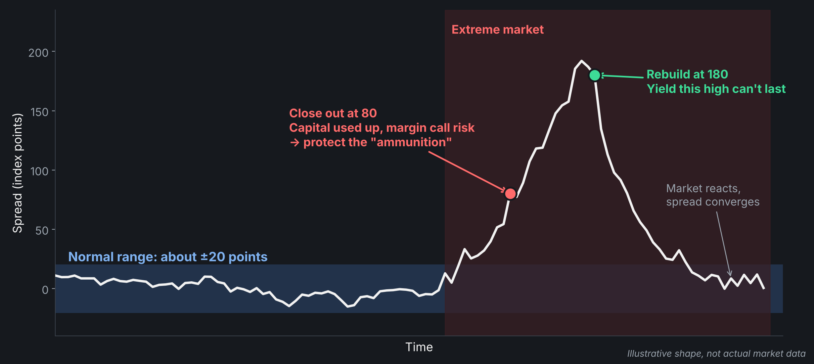

From a class mini-project, to a trading room, and back
Yashu · Oct 20, 2026
The code follows the rule. Choosing the rule is the real decision.
And Jane Street now runs AI on custom Etched chips.
IF300 futures and the ETF track the same 300 stocks. Normally, the gap stays within about ±20 points.

We know the 200M now. I had to decide before anyone knew, with no prior data like it.
An AI recommends closing a position and realizing a large loss. You cannot yet know whether it is right.
What would change your answer?